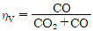
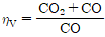
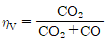
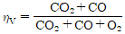
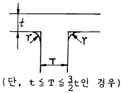
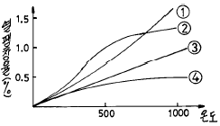

주조기능장 (2004-07-18 기출문제)
1과목: 임의 구분
1. 주철 쇳물의 탄소 당량을 알기위한 노전 시험방법이 아닌 것은?
- 쐐기형 시험
- 원통시험
- C.E시험
- 충격시험
(정답률: 72%)

2. 이상적인 탕구의 기능에 해당될 수 없는 것은?
- 온도구배를 주어 지향성 응고를 이루게 한다.
- 용탕의 흐르는 속도를 조절하여 조용히 들어가게 한다.
- 용탕이 주형에 들어가게 한다.
- 주형에 용탕이 흘러 들어갈 때 정압을 부여하지 않는다.
(정답률: 89%)
3. 큐폴라 조업에서 연소율(ηV)이란?




(정답률: 88%)
4. 부식검사는 대기속 혹은 용액에 침지하여 녹의 발생상황에 따라서 표면결함의 검출이나 재질의 적부를 판정하는 것이다. 이 검사방법 중 틀린 것은?
- 산세척법
- 아말감법
- 해수침지법
- 테르미트법
(정답률: 68%)
5. 주조합금의 응고수축(V/O)의 값이 가장 높은 것은?
- 백주철
- 탄소강
- 강
- 알루미늄
(정답률: 60%)
6. 주물사의 강도시험의 단위는?
- kgf/cm2
- kgf/m3
- kgf/cm4
- kgf/m
(정답률: 85%)
7. 어떤 금속을 고액공존 상태에서 목적하는 형상으로 가공하면 응고수축이나 가스(gas)에 기인하는 결함을 방지할 수 있다는 원리를 이용하는 특수 주조법은?
- Rheocasting
- Spincasting
- Countercasting
- Ultracasting
(정답률: 54%)
8. 회주철 주물에서 쇳물은 어느 쪽으로 주입하는 것이 좋은가?
- 주물의 단면두께가 얇은 곳
- 주물의 단면두께가 두꺼운 곳
- 주물의 단면두께가 중간인 곳
- 주물의 단면두께는 관계없음
(정답률: 75%)
9. 주형에서 탕구계에 속하지 않는 부분은?
- 압탕
- 탕구
- 탕도
- 주입구
(정답률: 87%)
10. CO2 주형을 만드는 과정에서 경화불량이 발생되었을 경우 예상되는 원인 중 관련이 가장 적은 것은?
- 물유리의 첨가 %가 너무 낮았다.
- CO2 가스 취입시간이 신속하였다.
- 후란수지를 사용했던 주물사를 혼합해서 사용했다.
- CO2 가스통의 잔류가스 유무를 조사하지 않았다.
(정답률: 73%)
11. 그림과 같은 치수를 가지는 T자 교차부 주물에 적용하는 라운딩(rounding)계산식은?

- r = (T+t) / 2
- r = t / 2 또는 T / 3
- r = (T-t) / 2
- r = T-t
(정답률: 77%)
12. 큐폴라(cupola)내에서 일어나는 환원반응은?
- CaO + FeS → CaS = FeO
- C + O2 → CO2 + 8080 Kcal/Kg
- CaO + MnS → CaS + MnO
- CO2 + C → 2CO - 3265 Kcal/Kg
(정답률: 73%)
13. 주물 소재 중 다이캐스팅법으로 주조하기 어려운 것은?
- Aℓ 합금
- Mg 합금
- Fe 합금
- Zn 합금
(정답률: 66%)
14. 제강반응에서 용제의 염기성 성분이 아닌 것은?
- CaO
- MgO
- FeO
- SiO2
(정답률: 78%)
15. 미하나이트(meehanite)주철의 접종제로 쓰이는 것은?
- Ca - Si
- Ca - C
- Ti - Mg
- Ca - S
(정답률: 84%)
16. 제품의 결함검사 중 박판 라미네이숀(lamination)결함을 찾는데 가장 적합한 방법은?
- Leak test
- Ultrasonic test
- γ-ray test
- Magnetic test
(정답률: 68%)
17. 백심가단주철의 풀림온도로 가장 적합한 것은?
- 950 - 1000℃
- 1380 - 1400℃
- 1420 - 1460℃
- 1470 - 1500℃
(정답률: 71%)
18. 주물사의 수분함량을 측정할 때 건조를 실시한 후 냉각은 어느 곳에서 하는 것이 좋은가?
- 실내공기 중에서
- 실외공기 중 직사광선 속에서
- 데시케이터 안에서
- 건조로 안에서
(정답률: 73%)
19. 주물사의 첨가제로 규산분말(珪酸粉末)을 사용하는 가장 큰 이유는?
- 소착방지
- 용금침입방지
- 통기도조절
- 가축성향상
(정답률: 67%)
20. 쉘몰드에 사용하는 금형의 적합한 사용 온도는?
- 10 - 50℃
- 200 - 300℃
- 550 - 650℃
- 850 - 950℃
(정답률: 64%)
2과목: 임의 구분
21. 주입온도가 낮거나 주입속도가 늦을 때 용금이 완전히 합쳐지지 못하고 기계적으로 접촉되어진 결함은?
- 균열(crack)
- 스캡(scab)
- 수축공(shrinkage cavity)
- 콜드셔트(cold shut)
(정답률: 88%)
22. 흑연 도가니로의 용량은 무엇으로 표시하는가?
- 1회의 알루미늄 용해량
- 1회의 구리 용해량
- 1회의 아연 용해량
- 1회의 흑연 용해량
(정답률: 85%)
23. 내화물에서 SK 26의 연화점은 몇도 정도인가?
- 1480℃
- 1580℃
- 1650℃
- 1750℃
(정답률: 78%)
24. 년간 50000 M-H(MAN-HOUR)가 소요되는 공장에서 1M-H(MAN-HOUR)당 환산 소요금액이 1541원 이었다. 직접비가 연간 4700만원 소요되었다면 직접비는 원가의 약 몇 % 를 차지하는가?
- 61
- 58
- 55
- 42
(정답률: 70%)
25. 제품과 동일한 형상으로 만든 목형은?
- Skeleton pattern
- Solid pattern
- Strickle pattern
- Sweep pattern
(정답률: 78%)
26. 목형 보존 방법에 관한 설명이 적당하지 않는 것은?
- 보관장소 바닥은 모래를 깔고 벽은 나무로 한다.
- 흡습에 의한 변형을 막기 위하여 온도를 일정하게 유지한다.
- 목형의 크기에 따라 창고를 준비한다.
- 보존구분과 기간을 기록한다.
(정답률: 83%)
27. 조형할 때 부분형(section pattern)의 사용에 가장 적합한 것은?
- 대형파이프
- 대형기어
- 소형벨트풀리
- 소형실린더
(정답률: 79%)
28. 목재의 비중에서 15%의 수분을 포함했을 때의 무게(g)와 그 용적(cm3)의 비를 무엇이라 하는가?
- 진비중
- 전건비중
- 기건비중
- 생재비중
(정답률: 65%)
29. Core print 란 무엇을 말하는가?
- 코어 복사기
- 목형의 보강대
- 코어를 주형이 지지할수 있도록 모형에 만든 돌출부
- 코어속의 받침대
(정답률: 86%)
30. 다음 목재 중 인장강도(Kgf/cm2)가 가장 큰 것은?
- 홍송
- 낙엽송
- 이깔나무
- 미송
(정답률: 82%)
31. 컴파아트먼식 열기건조법의 특징 중 틀린 것은?
- 용량별로 나누어 설치할 수 있다.
- 열손실이 적다.
- 설비비가 많이 들고 숙련을 필요로 한다.
- 나무의 종류,두께 등에 따라 각실에서 동시에 건조가 불가능 하다.
(정답률: 76%)
32. 상형과 하형의 모형이 분리선을 구성하는 평판의 양쪽에 바로 교착되는 곳에 장치하는 모형은?
- 매치 프레이트
- 패턴 프레이트
- 매스터 패턴
- 스킨 패턴
(정답률: 86%)
33. 도면에 표시된 파형기호(∼)는 어느 경우에 사용될 수 있는가?
- 선반가공
- 래핑가공
- 주물표면
- 스크래핑 표면
(정답률: 76%)
34. 도면에 치수를 기입할 때 지름의 기호 표시는?
- ø
- R
- t
- P
(정답률: 87%)
35. 스프링강의 기계적 성질 중 틀린 것은?
- 탄성한도가 커야 한다.
- 항복강도가 커야 한다.
- 피로한도가 낮아야 한다.
- 충격력에 견디는 성질이 커야 한다.
(정답률: 86%)
36. 상온에서 비중(比重)이 가장 큰 것은?
- Fe
- Cu
- Aℓ
- Sn
(정답률: 64%)
37. 인장시험에서 항복강도를 측정할 때 영구변형은 몇 % 를 적용하는가?
- 0.02
- 0.2
- 2.0
- 20.0
(정답률: 81%)
38. 실용황동 중 문즈메탈(muntz metal)의 주성분은?
- Cu60 - Zn40
- Cu50 - Sn50
- Cu40 - Pb60
- Cu70 - Sn30
(정답률: 84%)
39. Pearlite 의 결정조직은?
- α + Fe3C
- ACC
- Fe3C
- β + Fe3C
(정답률: 78%)
40. 구상흑연주철 제조시 구상화를 위하여 첨가되는 원소는?
- Mg
- Au
- S
- C
(정답률: 78%)
3과목: 임의 구분
41. 시험편의 표점거리가 112mm, 직경이 14mm이고 최대하중 5500Kgf 에서 절단되었을 때 실제 늘어난 길이가 20 mm라고 하면 연신율 및 인장강도는?
- 178 %, 307 Kgf/mm2
- 17.8 %, 35.7 Kgf/mm2
- 1.7 %, 3.07 Kgf/mm2
- 0.178 %, 0.307 Kgf/mm2
(정답률: 78%)
42. 고압 가스의 충전 용기의 보관시 유의할 사항 중 옳지 않는 것은?
- 전락하지 않을 것
- 전도하지 않을 것
- 충격을 방지하도록 할 것
- 통풍이 안되는 곳에 보관할 것
(정답률: 86%)
43. Cupola 용해에 의한 주조 작업에서 바닥에 물이 있을때 예상되는 것은?
- 연료비 저하
- 용해온도 증가
- 폭발
- 노상온도 상승
(정답률: 88%)
44. 비조질강의 상태에서 높은 강도와 인성, 가공성을 구비한 고장력강을 만들기 위한 야금학적 요인 중 틀린 것은?
- 합금원소 첨가에 의한 연강의 고용강화
- 미량 합금원소 첨가에 의한 결정립의 조대화
- 미량 합금원소 첨가에 의한 석출강화
- 제어 압연에 의한 강인화
(정답률: 83%)
45. 제품을 주형에서 빼내어 모래 떨기를 한 다음 주물표면을 청소한다. 수압으로 청소하는 기계는?
- 쇼트블라스트
- 에어블라스트
- 하이드로블라스트
- 진동 연마기
(정답률: 86%)
46. Fe-C 상태도에서 아공석강의 탄소 %는 약 어느 정도 인가?
- 0.03 - 0.8
- 1.0 - 1.5
- 1.7 - 2.0
- 2.2 - 3.0
(정답률: 82%)
47. 다음 중 가장 정밀한 치수를 가공할 수 있는 가공법은?
- 치핑
- 주조
- 줄다듬질
- 연삭
(정답률: 75%)
48. 그림은 각종 도형제의 가열온도와 열팽창률의 관계를 나타낸 것이다. 지르콘 (ZrO2 · SiO2)을 나타내는 것은?

- ①
- ②
- ③
- ④
(정답률: 83%)
49. 오일탱크 구조의 필요한 조건에 적합하지 않는 것은?
- 이물질이 들어가지 않도록 밀폐되어 있을 것
- 모터 펌프, 밸브 등을 설치시 변형 및 진동에 대비하여 충격을 흡수할 수 있도록 연성과 늘어나는 성질을 지니고 있을 것
- 탱크 안의 유면을 알아 볼 수 있도록 유면계가 설치되어 있을 것
- 적당한 크기의 주유기가 있고 여과할 수 있도록 주유구에 쇠그물이 붙어 있을 것
(정답률: 82%)
50. 유압회로 중에 어떤 원인에 의해서 기름이 누출 된다고 하여도 압력이 저하되지 않도록 누출된 만큼의 기름을 보급하는 작용을 하는 것은?
- 레귤레이터
- 아큠레이터
- 제너레이터
- 보조 유압탱크
(정답률: 74%)
51. 자동제어의 필요성이 아닌 것은?
- 노동조건 향상
- 생산설비 수명연장
- 생산속도 둔화
- 품질 균일화
(정답률: 83%)
52. 도면의 일부분을 보이게도 하고 빼기도 하려고 한다. Auto CAD에서 이와 같은 기능을 가진 것은?
- Layer
- Snap Mode
- Change
- Grip Mode
(정답률: 82%)
53. 압탕의 조건과 무관한 것은?
- 압탕은 제품보다 나중에 응고하여야 한다.
- 주물의 응고수축을 보충하여야 한다.
- 압탕의 압력이 제품에 골고루 미쳐야 한다.
- 방향성 응고를 고려할 필요는 없다.
(정답률: 88%)
54. 탕구저는 어떠한 곳에 만드는가?
- 탕도 끝부분에 만든다.
- 탕도와 주입구 사이에 만든다.
- 탕도 중간에 만든다.
- 탕구 밑에 만든다.
(정답률: 77%)
55. 미리 정해진 일정 단위중에 포함된 부적합(결점)수에 의거 공정을 관리할 때 사용하는 관리도는?
- p관리도
- nP관리도
- c관리도
- u관리도
(정답률: 64%)
56. 도수분포표에서 도수가 최대인 곳의 대표치를 말하는 것은?
- 중위수
- 비 대칭도
- 모우드(mode)
- 첨도
(정답률: 80%)
57. 로트수가 10 이고 준비작업시간이 20분이며 로트별 정미작업시간이 60분이라면 1로트당 작업시간은?
- 90분
- 62분
- 26분
- 13분
(정답률: 79%)
58. 더미활동(dummy activity)에 대한 설명중 가장 적합한 것은?
- 가장 긴 작업시간이 예상되는 공정을 말한다.
- 공정의 시작에서 그 단계에 이르는 공정별 소요시간들중 가장 큰 값이다.
- 실제활동은 아니며, 활동의 선행조건을 네트워크에 명확히 표현하기 위한 활동이다.
- 각 활동별 소요시간이 베타분포를 따른다고 가정할 때의 활동이다.
(정답률: 83%)
59. 단순지수평활법을 이용하여 금월의 수요를 예측할려고 한다면 이때 필요한 자료는 무엇인가?
- 일정기간의 평균값, 가중값, 지수평활계수
- 추세선, 최소자승법, 매개변수
- 전월의 예측치와 실제치, 지수평활계수
- 추세변동, 순환변동, 우연변동
(정답률: 74%)
60. 다음 중 검사항목에 의한 분류가 아닌 것은?
- 자주검사
- 수량검사
- 중량검사
- 성능검사
(정답률: 72%)